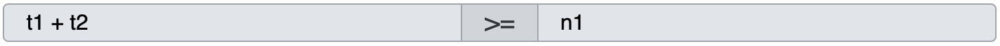
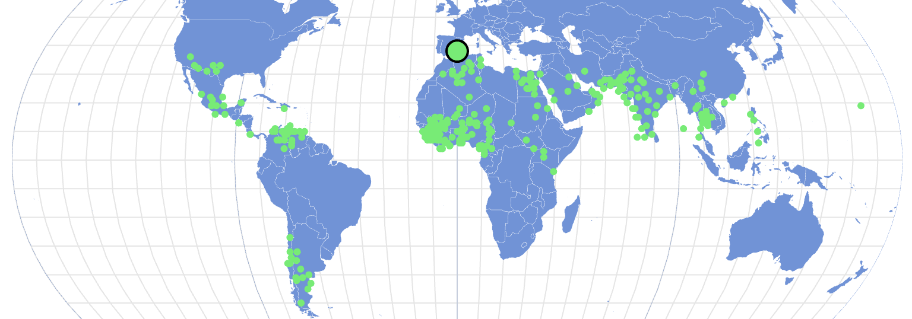
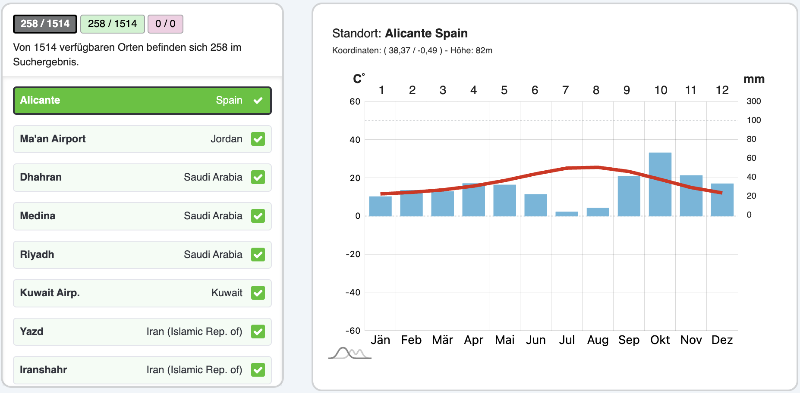
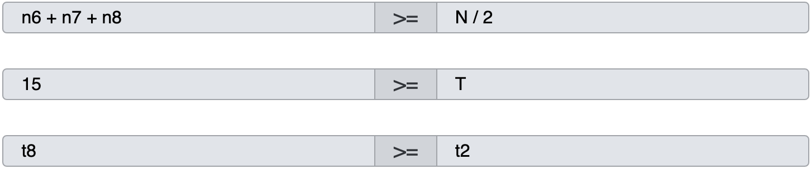
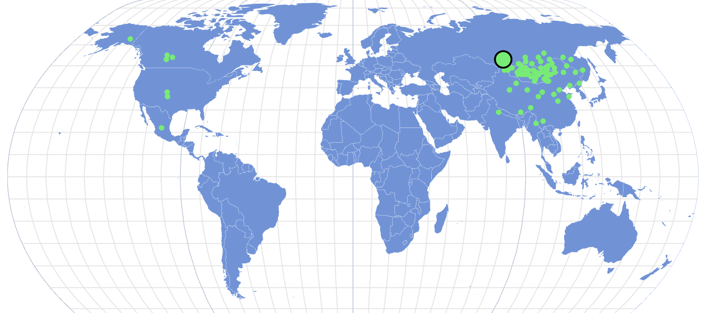

Auf dieser Webseite haben wir viele Klimadaten von über 1000
verschiedenen Wetterstationenauf der ganzen Welt gesammelt. Diese
Daten helfen uns, das Klima und Wetter der verschiedenen Gebiete
besser zu verstehen. Ihr könnt verschiedene Filter verwenden, um die
Auswahl der Wetterstationen einzuschränken und damit auf bestimmte
Fragen gezielter einzugehen.
Die Filter, die ihr einstellen könnt, basieren auf
Durchschnittswerten von verschiedenen Klimadaten, wie zum Beispiel
Temperaturen und Niederschläge. Wir haben zwölf Variablen für die
Durchschnittstemperaturen von Januar bis Dezember (t1 bis t12) und
zwölf Variablen für die Durchschnittsniederschläge von Januar bis
Dezember (n1 bis n12). Außerdem gibt es zwei weitere Variablen: den
alljährlichen durchschnittlichen Niederschlag (N) und die
Durchschnittstemperatur (T).
Mit diesen Variablen könnt ihr Rechnungen aufstellen, um Filter zu
erstellen. Zum Beispiel könntet ihr einen Filter setzen, der nur die
Ergebnisse anzeigt, bei denen die addierte Temperatur in C˚ von
Januar und Februar (t1 + t2) größer ist als der Niederschlag im
Januar (n1) in mm. Solche Filter helfen euch, die Wetterstationen zu
finden, die euren Kriterien entsprechen.

Wenn ihr die Filter angewendet habt, werden die Ergebnisse in einer
Liste und auf einer Weltkarte angezeigt. Ihr könnt auch die
Klimadiagramme der verschiedenen Stationen einsehen, um mehr über
das Klima und Wetter in diesen Gebieten zu erfahren.


Denkt daran, dass ihr mit diesen Filtern und Daten viele
verschiedene Fragestellungen untersuchen könnt, also probiert
verschiedene Kombinationen aus und seht, was ihr herausfinden könnt!

